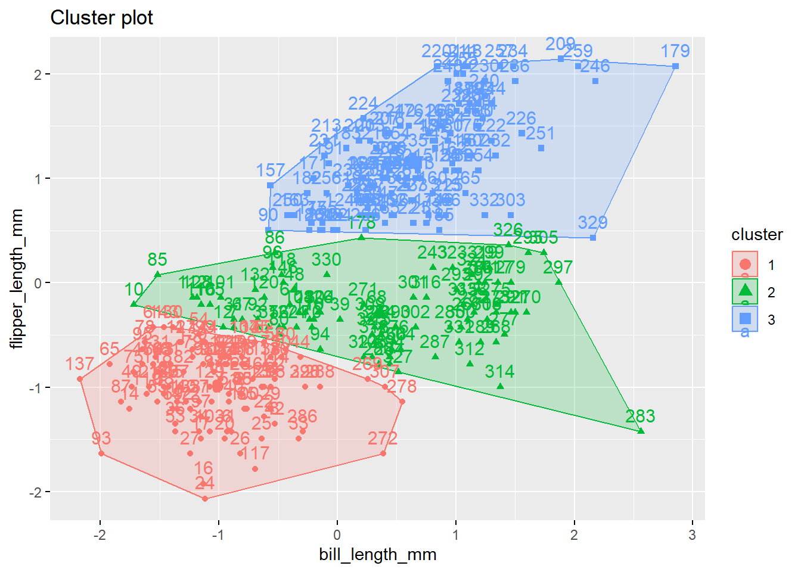
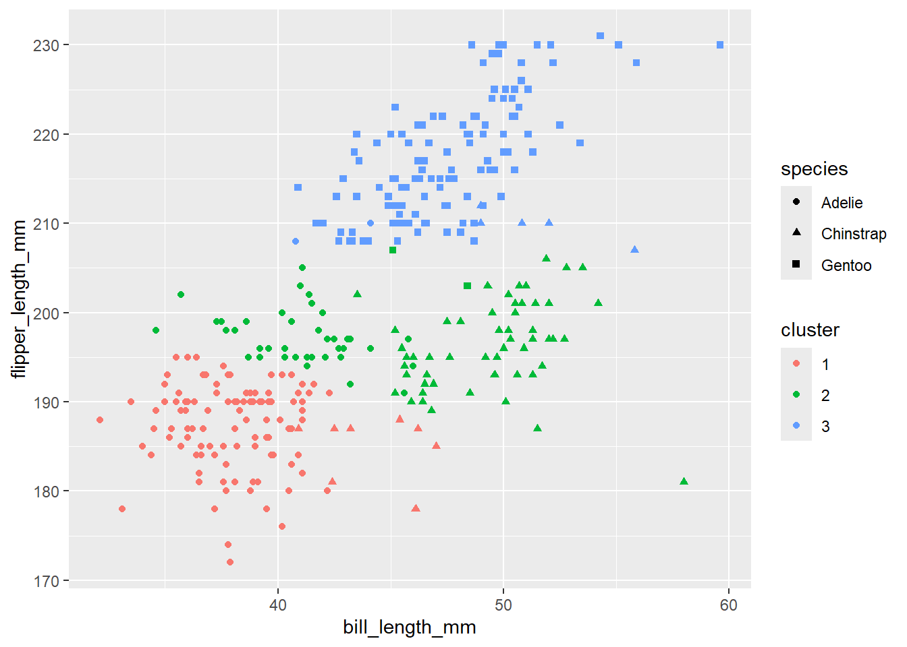
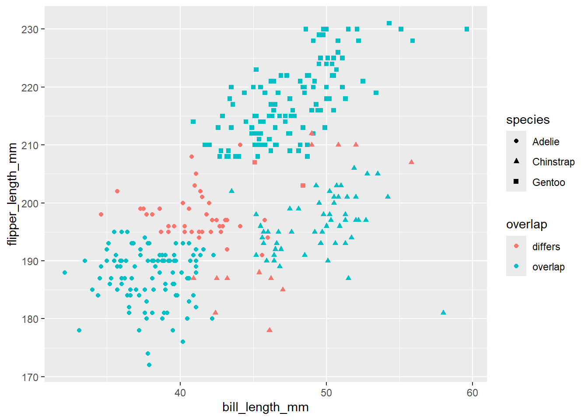
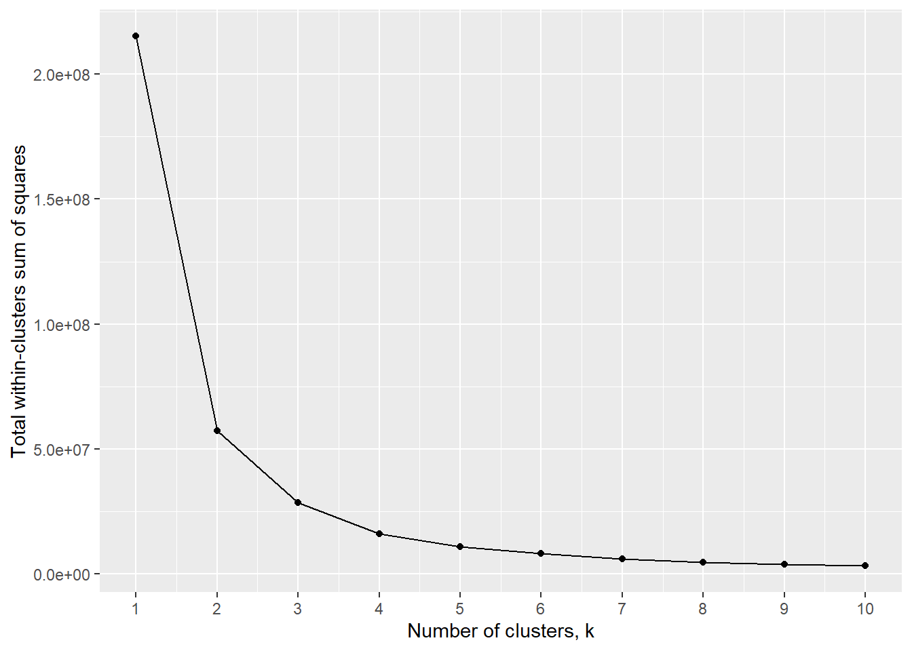
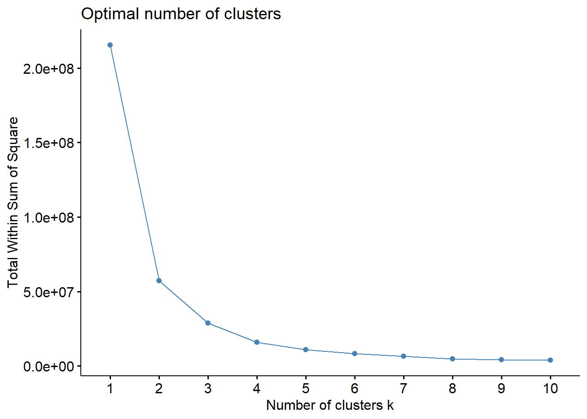

Demonstration 1: K-means Clustering in R
In this practical, you will learn how to implement k-means clustering using the Palmer Penguins dataset. You can read more about this data here:
The task in this practical is to cluster penguins based on their bill length and flipper length. We will then assess whether the predicted clusters map onto the actual species of penguin in the data. You can view this as an exercise in whether bill length and flipper length is sufficient to differentiate between species of penguin.

(Artwork by @allison_horst)
You should modify and experiment with the below code. There is also a brief exercise for you complete at the end of the walk-through.
You will be required to install two new packages first: palmerpenguins and factoextra.
Profile the Palmer Penguins dataset
## # A tibble: 6 × 8
## species island bill_length_mm bill_depth_mm flipper_length_mm body_mass_g
## <fct> <fct> <dbl> <dbl> <int> <int>
## 1 Adelie Torgersen 39.1 18.7 181 3750
## 2 Adelie Torgersen 39.5 17.4 186 3800
## 3 Adelie Torgersen 40.3 18 195 3250
## 4 Adelie Torgersen NA NA NA NA
## 5 Adelie Torgersen 36.7 19.3 193 3450
## 6 Adelie Torgersen 39.3 20.6 190 3650
## # ℹ 2 more variables: sex <fct>, year <int>## Rows: 344
## Columns: 8
## $ species <fct> Adelie, Adelie, Adelie, Adelie, Adelie, Adelie, Adel…
## $ island <fct> Torgersen, Torgersen, Torgersen, Torgersen, Torgerse…
## $ bill_length_mm <dbl> 39.1, 39.5, 40.3, NA, 36.7, 39.3, 38.9, 39.2, 34.1, …
## $ bill_depth_mm <dbl> 18.7, 17.4, 18.0, NA, 19.3, 20.6, 17.8, 19.6, 18.1, …
## $ flipper_length_mm <int> 181, 186, 195, NA, 193, 190, 181, 195, 193, 190, 186…
## $ body_mass_g <int> 3750, 3800, 3250, NA, 3450, 3650, 3625, 4675, 3475, …
## $ sex <fct> male, female, female, NA, female, male, female, male…
## $ year <int> 2007, 2007, 2007, 2007, 2007, 2007, 2007, 2007, 2007…Plot
## Warning: Removed 2 rows containing missing values or values outside the scale range
## (`geom_point()`).
Visualise the clusters

pengs |>
ggplot(aes(x = bill_length_mm,
y = flipper_length_mm,
color = factor(cluster),
shape = species)) +
geom_point() +
scale_color_discrete("cluster")
To what extent do the clusters overlap with species?
##
## 1 2 3
## Adelie 2 106 38
## Chinstrap 5 9 54
## Gentoo 117 0 2overlap <- sum(diag(pred))
differs <- sum(pred[upper.tri(pred)], pred[lower.tri(pred)])
# proportion of penguins "correctly" classified according to species:
overlap / sum(overlap, differs)## [1] 0.03903904How can we visualise the cluster-species overlap?
pengs |>
mutate(
overlap = case_when(
species == "Adelie" & cluster == 1 ~ "overlap",
species == "Chinstrap" & cluster == 2 ~ "overlap",
species == "Gentoo" & cluster == 3 ~ "overlap",
TRUE ~ "differs"
)
) |>
ggplot(aes(x = bill_length_mm,
y = flipper_length_mm,
color = overlap,
shape = species)) +
geom_point()
👉 TASKS
TASK 1: How well did k-means clustering perform?
Suppose you randomly picked Adelie, Chinstrap, or Gentoo for each penguin. What proportion of penguins would you “correctly” classify?
Your code here
Consider how this compares to the performance of the k-means clustering algorithm.
TASK 2: How many clusters should we use?
In the above example, we used three clusters because there are three species of penguin in our data. However, in practice, we may not know this “ground-truth” information. That is, we may not know how many species are of penguin are represented in the data.
Additionally, we may wish to cluster the data based on other criteria, such as minimizing the intra-cluster variation. Recall that unsupervised learning is useful for detecting patterns in the data.
One method we can use to determine the optimal number of clusters is the elbow method. This method involves plotting the within-cluster sum of squares (WSS; also known as within-cluster variation or intra-cluster variation) for a range values of k (recall that k is the number of clusters). We then look for the location of the “bend” in the in the plot, i.e., the elbow.
Below, we use the elbow method to determine the optimal number of clusters of penguins using the body_mass_g and bill_length_mm features.
# preprocess data
pengs_mass_length <-
pengs |>
select(body_mass_g, bill_length_mm)
# compute total within-cluster sum of square
wss <- function(k) {
kmeans(
pengs_mass_length,
centers = k,
nstart = 10
)$tot.withinss
}
# Compute and plot WSS for k = 1 to k = 15
k_values <- 1:10
# plot the WSS values against k
wss_values <- map_dbl(k_values, wss)
tibble(
k_values,
wss_values
) |>
ggplot(aes(k_values, wss_values)) +
geom_line() +
geom_point() +
scale_x_continuous("Number of clusters, k", breaks = unique(k_values)) +
scale_y_continuous("Total within-clusters sum of squares")
The results here suggest that the optimal number of clusters is 3 (which neatly aligns with the number of penguin species in the data). Although, 4 also looks like a good choice. The elbow method is useful, but it isn’t always clear where the elbow lies, which often simply reflects the reality of the data.
The elbow method is implemented in fviz_nbclust() function from the factoextra package:

TASK 3: Clustering cars
Cluster the mtcars data using kmeans().
## mpg cyl disp hp drat wt qsec vs am gear carb
## Mazda RX4 21.0 6 160 110 3.90 2.620 16.46 0 1 4 4
## Mazda RX4 Wag 21.0 6 160 110 3.90 2.875 17.02 0 1 4 4
## Datsun 710 22.8 4 108 93 3.85 2.320 18.61 1 1 4 1
## Hornet 4 Drive 21.4 6 258 110 3.08 3.215 19.44 1 0 3 1
## Hornet Sportabout 18.7 8 360 175 3.15 3.440 17.02 0 0 3 2
## Valiant 18.1 6 225 105 2.76 3.460 20.22 1 0 3 1Use the mpg and hp features to group the cars into three clusters.
Your code here
How well do your predicted clusters map onto the cyl feature in the mtcars data? (Note that the cyl feature (cylinders) has three values: 4, 6, 8).
Your code here
Next, find the optimal number of clusters in the data using the elbow method. You should start by using the mpg and hp features, although feel free to experiment with using other features.
Your code here